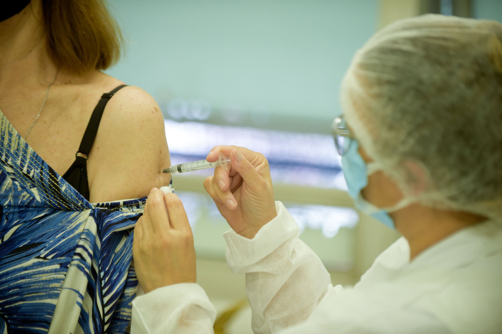

Os brasileiros que completaram o esquema vacinal e estão completamente imunizados contra a Covid
passam de 82 milhões de pessoas. São 82.315.330 pessoas que tomaram as duas doses ou a dose
única de vacinas, número que corresponde a 38,59% da população do país. Os dados são do
consórcio de veículos de imprensa divulgados às 20h desta terça-feira (21).
Os que estão parcialmente imunizados são 142.625.292 pessoas, o que corresponde a 66,86% da
população.
A dose de reforço foi aplicada em 380.807 pessoas (0,18% da população).
Somando a primeira dose, a segunda, a única e a de reforço, são 225.321.429 doses aplicadas
desde o começo da vacinação.
De ontem para hoje, a primeira dose foi aplicada em 509.424 pessoas, a segunda em 1.155.378, a
dose única 1.708, e a dose de reforço em 47.391, um total de 1.713.901 doses aplicadas.
Bem vindo a página CUCA GOOD NEWS!
Vacinação contra a Covid: 82 milhões de pessoas completaram o esquema vacinal e estão totalmente imunizados; 142 milhões tomaram a 1ª dose - 21/09/2021 às 20:02
Vacinação avança, e Brasil chega, em setembro, a 16 dias com mais aplicações de 2ª dose do que 1ª - 19/09/2021 às 15:30

Em setembro, o número de doses aplicadas nos braços dos brasileiros para a desejada imunização
contra a Covid-19 foi o maior até o momento, desde o início da campanha de vacinação.
Em
setembro, até sexta-feira, dia 17, em apenas um dia a aplicação majoritária não foi da segunda
dose. Isso indica que a imunização passou a avançar rapidamente e se aproxima do fim.
Entre 1º e 17 de setembro, 16.232.509 de pessoas completaram o ciclo vacinal. O número é
relativo a 79,5% do contabilizado em todo o mês de agosto, quando 20.412.793 de pessoas ficaram
devidamente imunizadas. Foi também neste mês que o recorde de “segundas doses” foi alcançado;
1.520.435 pessoas se imunizaram na última sexta-feira, dia 17.
Para este levantamento, foram descartadas as doses do imunizante da Janssen, já que para a
completa imunização é necessário apenas uma dose de vacina. O imunizante é o único que necessita
apenas de dose única.
No gráfico, é possível visualizar a mudança no ritmo da vacinação, quando a curva de aplicações
para a segunda dose torna-se maior que a primeira.
Brasil recebe maior remessa em um dia de vacina da Pfizer contra Covid-19 - 12/09/2021 às 14:43
O Brasil recebeu, neste domingo (12), cerca de 5 milhões de doses de vacina da Pfizer contra o novo coronavírus no Aeroporto de Viracopos, em Campinas (SP), – o maior lote do imunizante recebido em um único dia.
Segundo o governo federal, o primeiro voo, com 1,3 milhão de doses, desembarcou ainda de madrugada. O segundo voo, com 1,1 milhão de vacinas, chegou por volta das 10h30. Já as outras duas remessas, com 1,1 milhão e 1,5 milhão de unidades, chegaram à tarde.
“As vacinas chegam para acelerar ainda mais a campanha de vacinação que já imunizou mais de 70 milhões de brasileiros com as duas doses ou a vacina de dose única, ou seja, quase 44% da população adulta”, disse o ministério, em nota.
Número de mortos por Covid-19 cai pelo 2º mês seguido - 04/07/2021 às 15:06
Depois de a pandemia de Covid-19 atingir um de seus piores momentos no Brasil, dados do Ministério da Saúde revelam que o número de mortes pela doença teve uma queda nos últimos dois meses. Em junho, 18 estados registraram queda nas mortes.
Em janeiro, o país registou quase 30 mil mortes por conta da Covid-19; em fevereiro, o número superou o do começo do ano e em março houve uma aceleração. Com isso, o Brasil registrou mais de 66 mil mortes por Covid-19. Em abril, o número continuou crescendo e houve um aumento para mais 82 mil mortes. Em maio, após a adoção de medidas mais restritivas, o país registrou uma queda e foi para 59 mil mortes. Em junho, o número caiu para 55 mil.
Em termos percentuais, o número de mortes pela doença aumentou 3% de janeiro para fevereiro; quase 120% de fevereiro para março; cerca de 24% de março para abril até chegar ao período em que a curva começou a cair. De abril para maio, a redução foi de 28% e de maio para junho, a redução foi de aproximadamente 6%.
Primeira pessoa é vacinada contra Covid-19 no Brasil - 17/01/2021 às 15:29
Após a aprovação do uso emergencial pela Agência Nacional de Vigilância Sanitária (Anvisa), a enfermeira Mônica Calazans, de 54 anos, foi a primeira pessoa a ser vacinada contra a Covid-19 no Brasil. Ela recebeu o imunizante Coronavac, desenvolvido no país pelo Instituto Butantan, no Hospital das Clínicas de São Paulo, neste domingo (17).
Mônica foi a vencedora do prêmio Notáveis CNN em 2020 pela sua luta contra o coronavírus.
Mulher, negra e enfermeira da linha de frente Mônica Calazans, de 54 anos, mora em Itaquera, na zona Leste da capital paulista, e trabalha no hospital Emílio Ribas, referência no tratamento de Covid-19 no país. Para chegar ao seu trabalho, de acordo com um relato feito ao governo de São Paulo, ela leva cerca de uma hora e meia.
A enfermeira tem perfil de alto risco para complicações da Covid-19: é obesa, hipertensa e diabética. Mesmo assim, em maio, quando a pandemia atingia alguns de seus maiores picos, escolheu trabalhar no Emílio Ribas, mesmo ciente de que a unidade estaria no epicentro do combate à pandemia. Segundo ela, a vocação falou mais alto.
A profissional atuou como auxiliar de enfermagem durante 26 anos e resolveu fazer faculdade já mais adulta, e conseguiu o diploma de enfermeira aos 47 anos.
Corintiana, Mônica é viúva e mora com o filho Felipe, de 30 anos, conta que é minuciosa nos cuidados de higiene e distanciamento no trabalho e quando chega em casa.
Atualização sobre as vacinas contra a Covid-19 - 03/12/2020
Minuto covid-19 - informações e esclarecimentos que contribuem para o enfrentamento da pandemia do covid-19